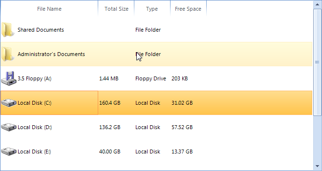
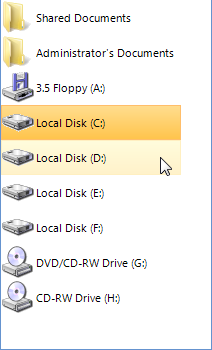
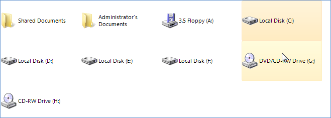
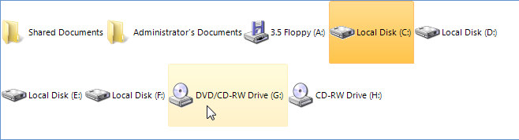
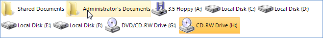

Working with items
Selection
RadListView supports both single and multi selection. The selection mode is determined by the
MiltiSelect property of the control. The selected item in single selection
mode can be accessed from the SelectedItem property and in multi select mode
from the SelectedItems collection of RadListView.
Multiple items can be selected in code as well. This can be achieved by using the Select method.
This method takes and array of ListViewDataItem as parameter.
[C#] Programmatically select items
ListViewDataItem[] itemsToSlelct = new ListViewDataItem[3];
itemsToSlelct[0] = radListView1.Items[1];
itemsToSlelct[1] = radListView1.Items[3];
itemsToSlelct[2] = radListView1.Items[4];
radListView1.Select(itemsToSlelct);
[VB.NET] Programmatically select items
Dim itemsToSlelct(2) As ListViewDataItem
itemsToSlelct(0) = RadListView1.Items(1)
itemsToSlelct(1) = RadListView1.Items(3)
itemsToSlelct(2) = RadListView1.Items(4)
RadListView1.Select(itemsToSlelct)
Item sizing
In DetailsView this property sets only the Height of the
Item, since the Width is determined by the
Width of the columns. Here is a sample setting of 50 pixels height of
the items and different widths for the columns:
[C#] Item sizing
radListView1.ItemSize = new Size(0, 50);
radListView1.Columns[0].Width = 50;
radListView1.Columns[1].Width = 75;
radListView1.Columns[2].Width = 100;
[VB.NET] Item sizing
RadListView1.ItemSize = New Drawing.Size(0, 50)
RadListView1.Columns(0).Width = 50
RadListView1.Columns(1).Width = 75
RadListView1.Columns(2).Width = 100

In ViewType.ListView, when FullRowSelect is set to
false, the ItemSize sets the Item size accordingly:
[C#] Item sizing
radListView1.FullRowSelect = false;
radListView1.ItemSize = new Size(180, 35);
[VB.NET] Item sizing
RadListView1.FullRowSelect = False
RadListView1.ItemSize = New Drawing.Size(180, 35)

There are two more properties that provide additional customization options for all views –
AllowArbitraryItemWidth and AllowArbitraryItemHeight.
When both of these are set to false, the ItemSize is
the one that determines the size of the items:
[C#] Item sizing
radListView1.ItemSize = new Size(160, 80);
radListView1.AllowArbitraryItemHeight = false;
radListView1.AllowArbitraryItemWidth = false;
[VB.NET] Item sizing
RadListView1.ItemSize = New Drawing.Size(160, 80)
RadListView1.AllowArbitraryItemHeight = False
RadListView1.AllowArbitraryItemWidth = False

If AllowArbitraryItemWidth is set to true,
the item will size horizontally as much as it needs to fit its content:

Respectively, AllowArbitraryItemHeight sizes the item in height in
order to fit its content.

Best fit columns
RadListView has a built-in mechanism to increase or decrease the width of one or all columns in a way that makes all the text inside that column cells visible.
You can trigger this mechanism by using DetailListViewElement.BestFitColumns or ListViewDetailColumn.BestFitColumn methods.
The end-user can perform the best fit by double clicking on the right edge of a header cell.

You can customize the execution of the algorithm of a concrete column by setting its AutoSizeMode property if the desired column. There are the following options:
BestFitColumnMode.None - The column width does not automatically adjust.
BestFitColumnMode.AllCells - The column width adjusts to fit the contents all cells in the column.
BestFitColumnMode.DataCells - The column width adjusts to fit the contents of the data cells.
BestFitColumnMode.HeaderCells - The column width adjusts to fit the contents of the header cell.